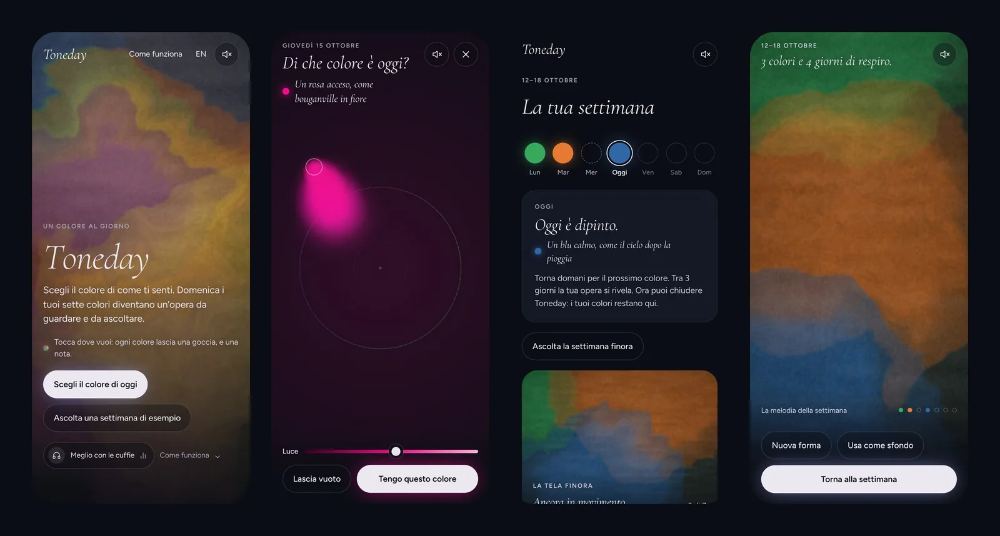
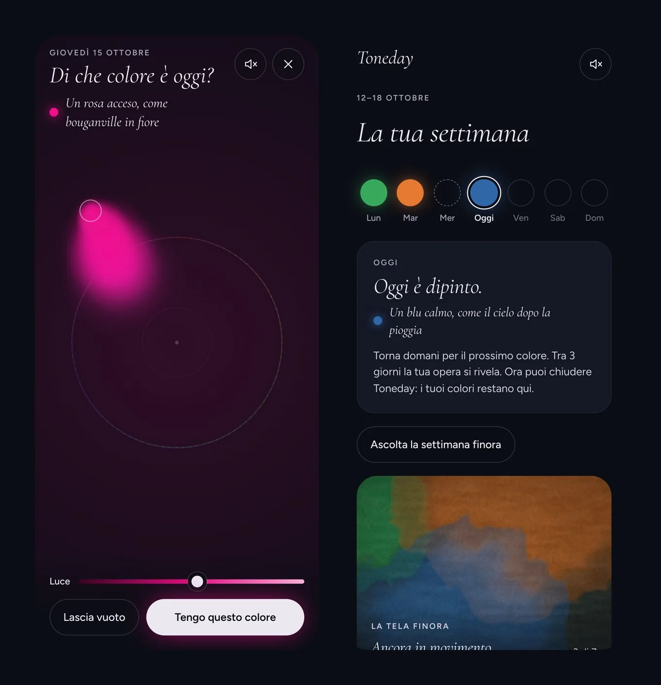
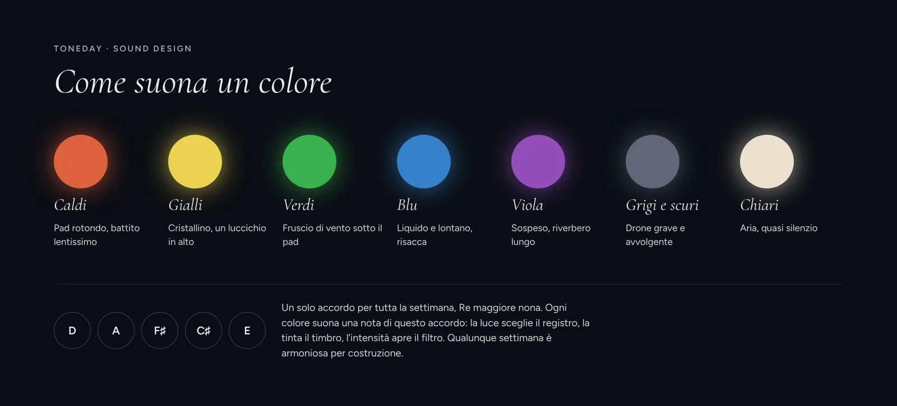
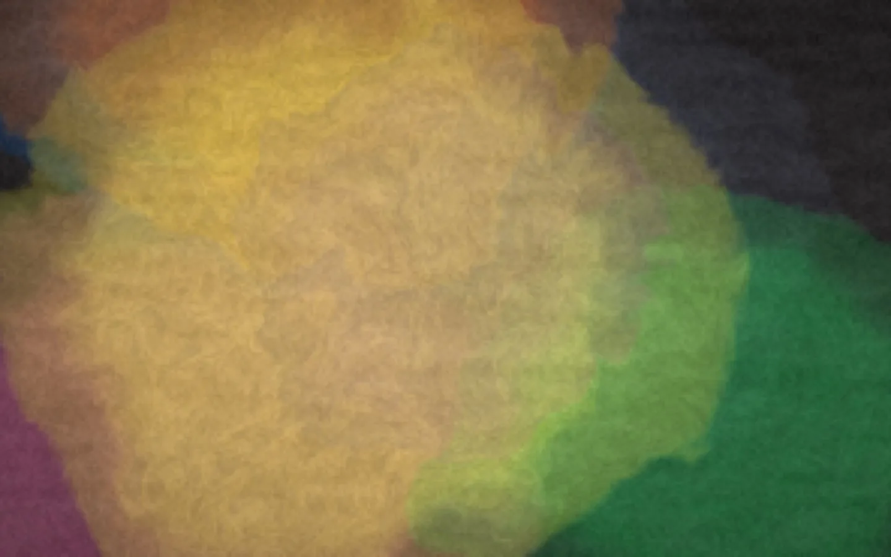
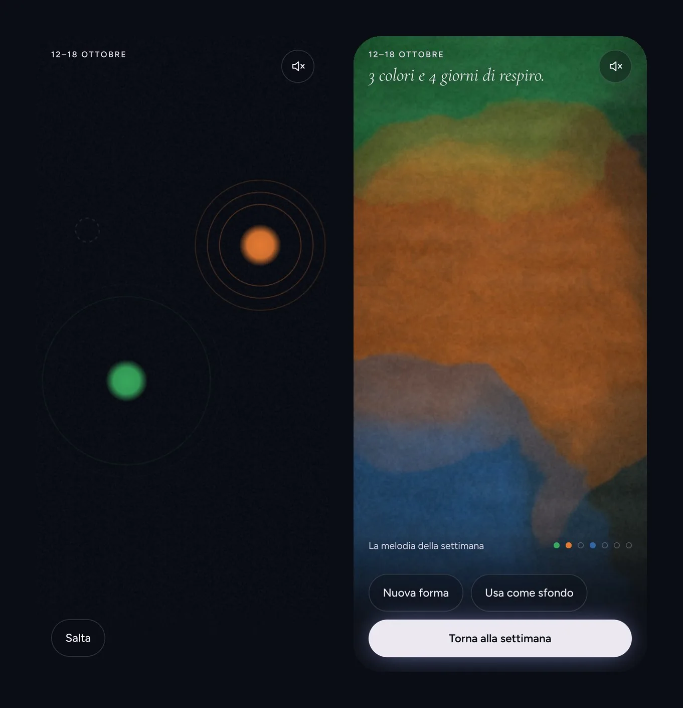
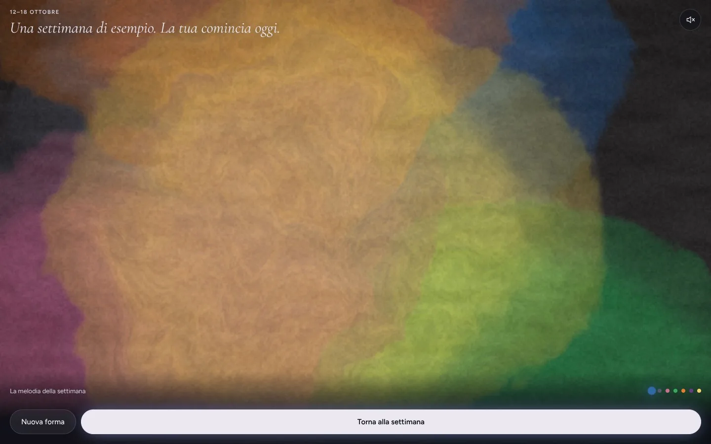
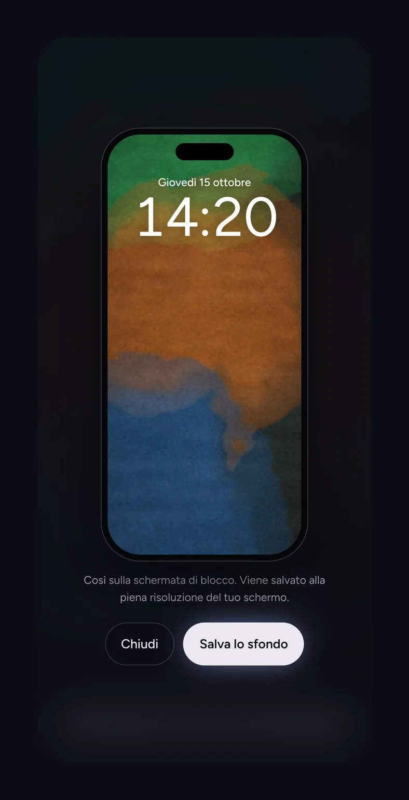

L'idea
Le app per il benessere emotivo di solito chiedono di dare un voto al proprio umore, da 1 a 5, e restituiscono grafici, medie e serie da non interrompere. È un linguaggio da prestazione, applicato a qualcosa che prestazione non è.
Toneday fa una sola domanda al giorno, senza parole: di che colore è oggi?
Non serve dare un nome a ciò che si prova. Basta mostrarlo. A fine settimana i sette colori diventano un'opera unica, con la sua musica. Il messaggio che il progetto vuole lasciare è semplice: anche le giornate grigie, insieme alle altre, creano qualcosa di bello.
I principi
Prima di disegnare una schermata ho fissato quattro regole, e ogni scelta successiva è stata verificata su queste.
- Nessuna pressione. Niente serie da mantenere, niente notifiche rosse, niente sensi di colpa. Un giorno saltato diventa una pausa nella musica.
- Nessun numero. Nessun punteggio, nessuna statistica sull'umore. Solo colore e suono.
- Privata per scelta. Nessun account e nessuna pubblicità. I colori restano nel browser di chi li sceglie, e le visite sono contate senza cookie.
- Per tutte le persone. Ogni colore è descritto a parole per i lettori di schermo, ogni settimana si può ascoltare e non solo guardare, e tutte le animazioni si spengono con "Riduci movimento".
Toneday non è uno strumento medico né psicologico, e lo dice chiaramente. Per chi attraversa un momento difficile, il sito rimanda con discrezione a una rete di linee di ascolto gratuite.

Il gesto: scegliere un colore
Al posto di un selettore c'è una superficie d'inchiostro. Muovendo il dito intorno al cerchio cambia la tinta. Verso il bordo il colore diventa più intenso, e un cursore sceglie quanta luce ha. L'inchiostro si allarga come in acqua, e ogni colore riceve una piccola frase poetica, per esempio "Un blu calmo, come il cielo dopo la pioggia".
Mentre si sceglie, il colore suona. Vista, udito e tatto rispondono allo stesso gesto: su Android arriva anche una leggera vibrazione quando si passa da una famiglia di colori all'altra.
Dopo la scelta, il colore si stacca dalla superficie, disegna un piccolo arco e atterra nel suo giorno della settimana. Lì la schermata chiude la giornata: "Oggi è dipinto." Una riga spiega cosa succede dopo e dice che si può chiudere l'app. In una prima versione, dopo la scelta l'utente non sapeva cosa fare. Questa chiusura esplicita è nata da quel test.

Il suono
Tutto il suono è sintetizzato dal vivo, senza file audio, quindi ogni settimana suona in modo diverso.
La regola alla base è un vincolo armonico: tutta la settimana vive dentro un solo accordo, Re maggiore nona. Ogni colore suona una sola nota di quell'accordo, quindi qualunque combinazione di giorni è armoniosa per costruzione. Chi usa Toneday non può "sbagliare".
- La luce sceglie il registro: i colori scuri stanno in basso, quelli chiari in alto.
- La tinta sceglie il timbro: i caldi sono pad rotondi, i blu sono liquidi e lontani, i verdi portano un fruscio di vento, i viola restano sospesi in un riverbero lungo.
- L'intensità apre il filtro insieme al volume: è questo a rendere il gesto organico.
- Un Re grave quasi impercettibile tiene insieme tutto, come un pavimento sotto la musica.
- In cuffia ogni giorno ha il suo posto nello spazio stereo, dal lunedì a sinistra alla domenica a destra.
Alla prima visita il sito invita a indossare le cuffie, e una settimana di esempio comincia a suonare prima ancora di scegliere qualcosa.

La velatura: l'opera
In pittura la velatura è uno strato di colore trasparente steso sopra gli altri. L'opera di Toneday funziona così, dipinta in tempo reale da uno shader WebGL:
- ogni giorno è una velatura sovrapposta alle precedenti, e dove due colori si incontrano nasce una tinta nuova;
- il pigmento si raccoglie sui bordi, che sfrangiano come nell'acquerello;
- la carta ha grana e fibre;
- tutta la superficie si muove lentissima, come acqua sotto la pittura.
La prima versione usava macchie di colore sfocate. Funzionava, ma assomigliava a qualunque sfondo sfumato. La velatura dà all'opera una firma visiva riconoscibile.

La rivelazione della domenica
La domenica sera la settimana si rivela. I giorni cadono uno alla volta come gocce, ognuna con un rintocco di vetro sulla propria nota. Poi si fondono nell'opera e si sente l'accordo pieno. Infine i giorni cantano in ordine, dal lunedì alla domenica: è la melodia della settimana, che ritorna con variazioni e pause. Ogni nota fa brillare il colore del suo giorno.


"Nuova forma" rimescola gli stessi sette colori in una composizione diversa. "Usa come sfondo" mostra l'opera sulla schermata di blocco e la salva alla risoluzione piena del telefono. Così la settimana accompagna l'utente anche nei giorni successivi.

La prima pagina come esperienza
Chi arriva sul sito può giocare subito. Su desktop il cursore è un pennello: muovendolo si lasciano velature che si allargano e svaniscono, e ognuna suona. Su telefono ogni tocco lascia una goccia e una nota. La posizione decide il colore con la stessa logica del cerchio della scelta del giorno, così il gesto si impara già nella prima pagina.
Per chi visita una volta sola, come i giornalisti o le giurie, c'è "Ascolta una settimana di esempio", che porta subito alla rivelazione.
Dettagli che contano
- Transizioni come inchiostro nell'acqua: ogni schermata si scioglie nella successiva con una leggera sfocatura, grazie a Motion.
- I giorni saltati: una riga gentile ricorda i giorni rimasti senza colore e dice che possono restare "respiri". Nessuna penalità.
- Installabile e offline: si aggiunge alla schermata Home e funziona anche senza connessione. L'invito a installarla compare solo dopo aver concluso la giornata.
- Prestazioni adattive: se un telefono fatica, l'opera si dipinge a una risoluzione più bassa. Se non regge nemmeno quella, torna da sola a una resa più semplice.
- Privacy per costruzione: caratteri e librerie sono serviti dal sito stesso, e nessuna risorsa viene caricata da terze parti.
Il processo
Ho progettato e sviluppato Toneday da solo, in vibe coding con Claude. Io ho deciso l'idea, le regole, il suono e ogni dettaglio dell'interfaccia; Claude ha scritto il codice, che ho provato e corretto a ogni passaggio, soprattutto sul telefono.
- Prototipo nel browser per testare la combinazione di gesto, colore e suono. Il suono della settimana inizialmente non era armonioso: ne è nato il vincolo dell'accordo unico.
- Schermate per iPhone per definire la direzione visiva: notte, tipografia corsiva, e tutto il colore lasciato all'utente.
- Web app completa, bilingue, con SEO, statistiche senza cookie e pubblicazione su Vercel.
- Rifinitura per i premi web: la velatura in WebGL, la prima pagina dipingibile, la chiusura della giornata e una serie di correzioni nate dai test sul telefono.
Prossimi passi
- Un archivio delle opere passate e, a dicembre, "il tuo anno" in 52 velature.
- L'esportazione di un breve video dell'opera con il suo suono, da condividere.
- Un'app nativa per iPhone, con vibrazioni sincronizzate al suono e un widget.